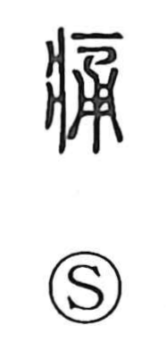

痛

Kun: itai, itamu, itameru | On: tsuu
pain ・ to hurt ・ ache ・ severe
Explanation
痛 is a phono-semantic character. On the left, 疒 depicts a sick person lying on a bed, signaling illness; on the right, 甬 provides the sound. In ancient forms 甬 shows a bucket—hollow like a tube—so it came to suggest something passing straight through without congestion. Joined with the sickness sign, the graph evokes an illness in which sharp pain courses through the body. From this core sense arise the readings itai, itamu, and itameru and the meanings “to hurt” and “to ache.” By extension it also describes keenness or severity and even thoroughness, as heard in compounds such as 痛飲 tsuuin (drinking heavily), 痛快 tsuukai (exhilarating), 痛恨 tsuukon (bitter regret), 痛罵 tsuuba (scathing abuse), and 痛烈 tsuuretsu (fierce, severe).